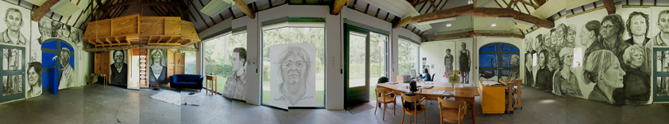

Gedurende mijn werkperiode van 6 maanden bij ZIN in 2009 heb ik de ruimte van het gastatelier gebruikt als uitgangspunt/wit leeg doek om een groepsportret in houtskool te laten groeien van de mensen die daar wonen en/of werken. Fraters, adviseurs, administratief personeel, de tuinvrouw, de directeur, een gastvrouw, de kok, maar ook het ZIN-team; verstandelijk gehandicapten die o.a. huishoudelijk werk verrichten, waren gedurende mijn verblijf mijn modellen.

Op de de deuren en ramen heb ik enkele bewoners van de communiteit individueel geportretteerd. Het venster doet denken aan het kader van een schildersdoek. Het werkelijke landschap achter de geportretteerde gaat een relatie aan met de getekende werkelijkheid en wordt zo samen een nieuwe werkelijkheid.


Frater Frans vanuit het keukenraam naar buiten. Frater Frans van buiten naar binnnen gezien.
De tekst aangebracht op het raam door een eerdere gastkunstenaar Simon Benson, schijnt door een portret heen waardoor zowel de tekst als de tekening een andere lading krijgt.


Gastatelier buitenzijde. Voor het raam een tekening in houtskool.


Tekening voor raam in de winter en de zomer.
Tekst van www.zininwerk.nl: "ZIN is ontstaan uit de wens van de Fraters van Tilburg om aan hun klooster "Huize Steenwijk" in Vught een nieuwe bestemming te geven, passend bij hun spirituele traditie. Barmhartigheid vormt de inspiratiebron van hun werken voor de hulpbehoevenden van toen en nu. In 1996 heeft het Generaal Kapittel besloten het klooster te ontwikkelen tot een plaats van bezinning en ontmoeting. ZIN, het klooster voor zingeving en werk, was in de kiem geboren.In het voormalig tuinmanshuis van ZIN is een gastatelier gevestigd. Het gastatelier is een vrijplaats voor de kunsten; beeldende kunst, muziek, fotografie, drama, literatuur en poëzie. Elk half jaar woont en werkt een andere kunstenaar in het atelier. Zij leveren een bijdrage aan trajecten en programma's voor opdrachtgevers. De eerste kunstenaar (Frank Havermans) heeft de atelierwoning KAPKAR / TAW-BW-5860 speciaal voor het gastatelier ontworpen en vervaardigd".